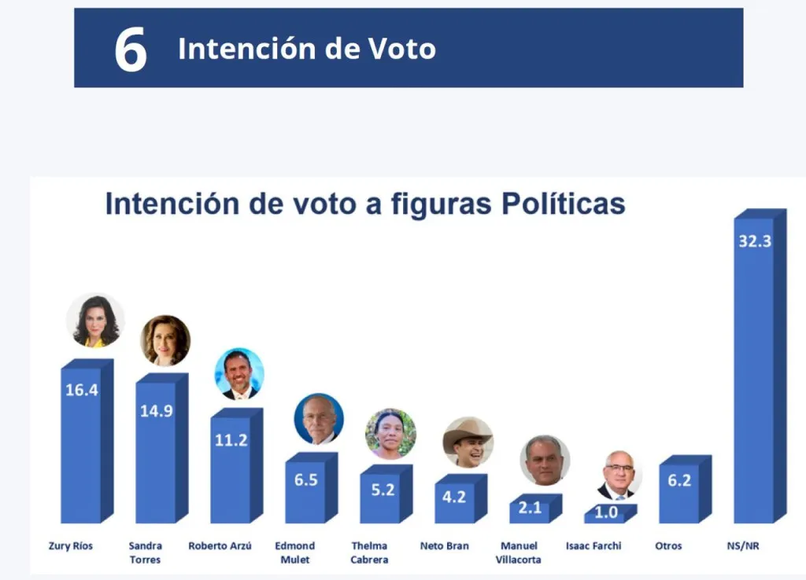

Politico Rechazado
Carlos Pineda, excandidato a la Presidencia por el partido político Prosperidad Ciudadana (PC), quedó fuera de las elecciones de este año por resolución de la Corte de Constitucionalidad (CC), que estableció esa situación este viernes 26 de mayo.
El favorito a ganar
La temporada de encuestas preelectorales ha abierto ya y sólo en la última semana han circulado tres de ellas, aunque sólo dos cuentan con una ficha técnica y empresa encuestadora responsable.
¿Que si alguna refleja novedad? No realmente. Nos confirman datos por demás sabidos.
Primero: Zury Ríos y Sandra Torres son las reinas del mambo. Ambas son las aspirantes con más intención de voto a su favor aunque todas las mediciones reflejan que Torres es aborrecida por más electores que quienes la apoyan. Zury en cambio tiene un diferencial ligeramente positivo.
Segundo: que Roberto Arzú y Edmond Mulet integran el segundo pelotón que no está demasiado distanciado de las líderes de la etapa.
Tercero: que no se refleja en ninguna medición que Thelma Cabrera de Codeca vaya a despuntar para reunir el voto anti sistema a gran escala.
Cuarto: que el presunto candidato oficialista, Manuel Conde, necesitará aplicarle una terapia de choque a los potenciales votantes para darse a conocer y más aún para desmarcarse de la animosidad que inspira por ser el herededor de Alejandro Giammattei.
El panorama pre electoral luce sombrío, sin novedades reales.

Sospechamiento de corrupcion
Politio conocido fue rechazado y lloro
¿Sandra Torres le pago a Badabum?
La productora de contenido audiovisual mexicana Badabun, publicó un video en redes sociales en el que se referían a la supuesta "Verdad de Guatemala", en donde la presentadora Paola Castillo se refería a su mala experiencia, durante su visita al país.
En el video Castillo relata que a pocos minutos de llegar a Guatemala le habrían clonado la tarjeta y que conversó con varias mujeres que le comentaron que se sienten inseguras. Sin embargo, instantes después narra qué se siente feliz, porque Guatemala tendrá una mujer presidenta.
De inmediato menciona a Sandra Torres, presidenciable de la Unidad Nacional de la Esperanza (UNE) y se muestran imágenes de la campaña electoral de ese partido. Al mismo tiempo que la presentadora dice: "Quiero felicitar al pueblo de Guatemala por que pondrán a la primera mujer presidenta, les juro que no se van a arrepentir"
Tras ello, los internautas comenzaron a preguntarse si el video había sido pagado por la UNE. El partido informó que no pagaron por el video y que Badabun los buscó porque Torres lidera las encuesta